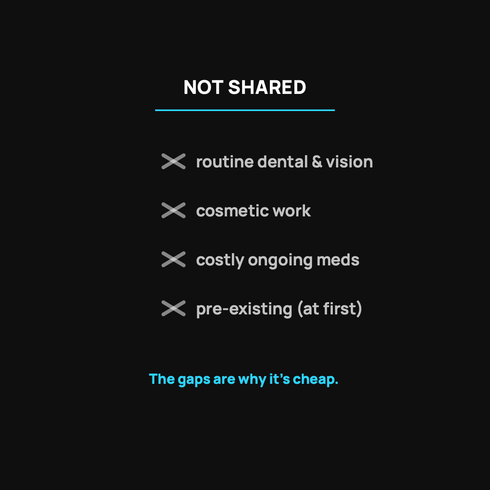

What CrowdHealth Doesn't Cover
The honest list of gaps, and the cheap workaround for every one of them.
CrowdHealth doesn't share routine dental and vision, cosmetic procedures, expensive ongoing medications, some elective and lifestyle care, or pre-existing conditions until their waiting period is up. That's the design, not fine print. Sharing is for the big unexpected things, and the gaps are exactly why the monthly number stays low.

The fastest way to trust something is to hear its honest limits before you hear its pitch. So instead of another list of what health sharing does, let me hand you the other list: the stuff it doesn't share, and how to plan around it. My family uses CrowdHealth, and knowing these gaps up front is exactly why we've never been blindsided. None of this is hidden, it's all in the guidelines, but let me put it in plain English.
The big categories that aren't shared
Here's the honest rundown of what generally falls outside eligible sharing:
- Pre-existing conditions, at least until you clear the waiting-period rules. This is the big one, and I covered pre-existing conditions and health sharing fully.
- Routine dental and vision. Cleanings, fillings, glasses, contacts. This is everyday maintenance, not an unexpected event.
- Cosmetic procedures. Elective work done for appearance rather than a medical need.
- Expensive ongoing medications. The model funds events, not a predictable high monthly drug cost forever. More on health sharing and prescriptions.
- Some elective and lifestyle stuff. Things you choose and can plan for, rather than emergencies that happen to you.
None of these should feel like a trap. They're all the same theme: health sharing is built for the unexpected big stuff, not for routine, predictable, or elective costs.
Why the gaps exist (and why that's fine)
A sharing community pools money to catch each other when something unexpected and expensive hits. If the pool also paid for everyone's glasses, teeth cleanings, and elective procedures, it would just be regular insurance with regular insurance prices, and the whole cost advantage would vanish.
The gaps are the reason the monthly number is low. You're trading "covers every little thing" for "cheap and strong on the big things." For a healthy family, that's usually the better trade.
How to plan around every one of these
The good news is that each gap has a simple, cheap workaround:
- Dental and vision: pay cash (often reasonable) or grab a low-cost standalone dental or vision plan. I wrote about doing dental and vision without insurance.
- Routine meds: shop the cash price with a free discount tool. Generics are often just a few dollars.
- Pre-existing conditions: know your waiting-period rules going in, and keep the right coverage if you have an active one.
- The predictable stuff in general: budget for it with a small sinking fund, the same way you'd budget for car maintenance.
The takeaway
CrowdHealth doesn't cover routine dental and vision, cosmetic work, expensive ongoing meds, or pre-existing conditions before their waiting periods. That's not fine print, it's the design, and it's exactly why the monthly cost stays low. Know the gaps, plan the cheap workarounds, and you get the best of it: a strong, affordable backstop for the big stuff, with no nasty surprises.
Questions I get about this
Does CrowdHealth cover dental and vision?
Not routine dental and vision. Cleanings, fillings, glasses, and contacts are everyday maintenance, not unexpected events. Pay cash, which is often reasonable, or add a low-cost standalone dental or vision plan. I explain how my family handles it in Dental and Vision Without Insurance.
Does CrowdHealth cover prescriptions?
Everyday generics you pay at the cash price, often a few dollars a month with a free discount tool. Medications tied to a health event ride along with the event. An expensive brand-name drug you take every month isn't what the model is built for.
Why doesn't health sharing cover everything?
Because if the pool also paid for everyone's glasses, cleanings, and elective procedures, it would just be regular insurance with regular insurance prices. You're trading "covers every little thing" for "cheap and strong on the big things." For a healthy family, that's usually the better trade.
Want to read the full guidelines yourself? Use my code NORMAL: see CrowdHealth (opens in a new tab). New members get their first 3 months at $99 a month with code NORMAL.
My family of four uses CrowdHealth and I really believe in the model. If you join through my discount link (opens in a new tab) (code NORMAL), you get your first 3 months at $99 a month, and Normaltown USA earns a referral bonus if you stick around. It costs you nothing extra, and I only refer you to things I would tell a friend about. Health sharing is not insurance, and nothing here is medical, tax, or financial advice.

Written by David Dewese
Normal guy with a full-time job, wife, and kids. Spent twenty years pursuing music and creative ventures before starting a family. Sharing tips and tricks on how to thrive while living on an artist's income. Not a financial advisor. More about me.
New here?
Normaltown USA is plain-English money and healthcare help for normal people, written by a regular guy with a family of four. No jargon, no hype. Start here, or read the FAQ.